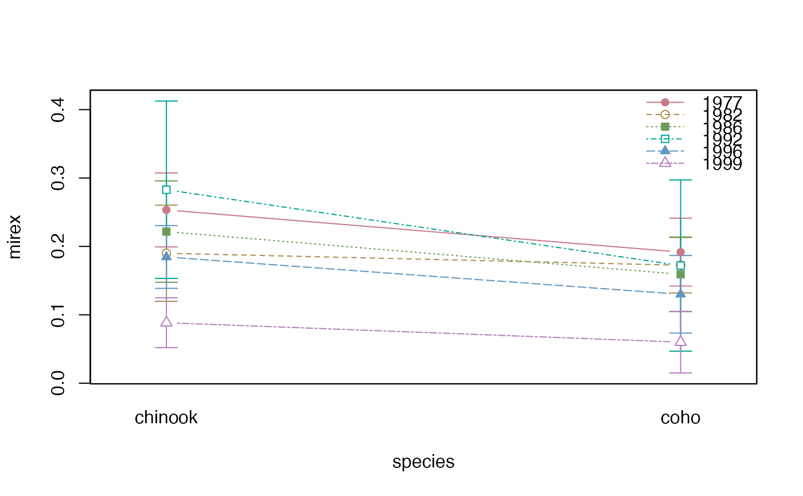
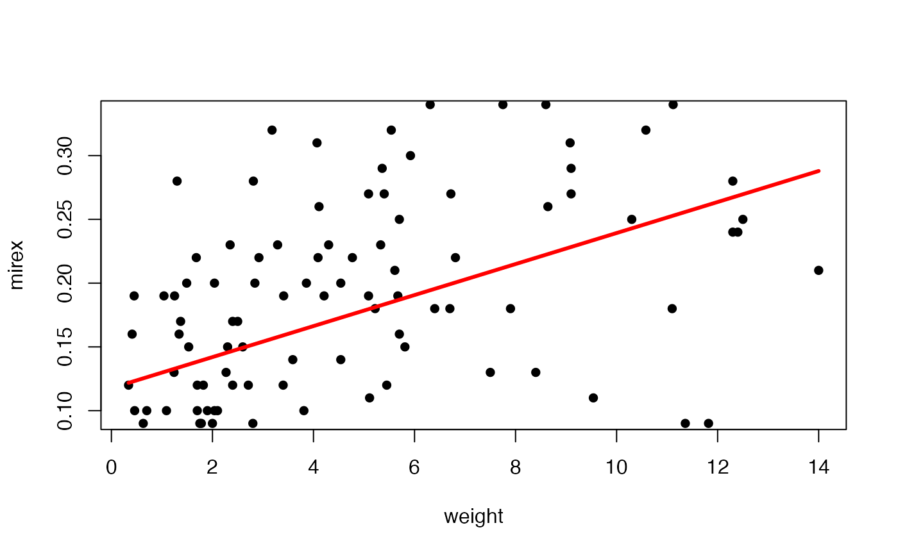
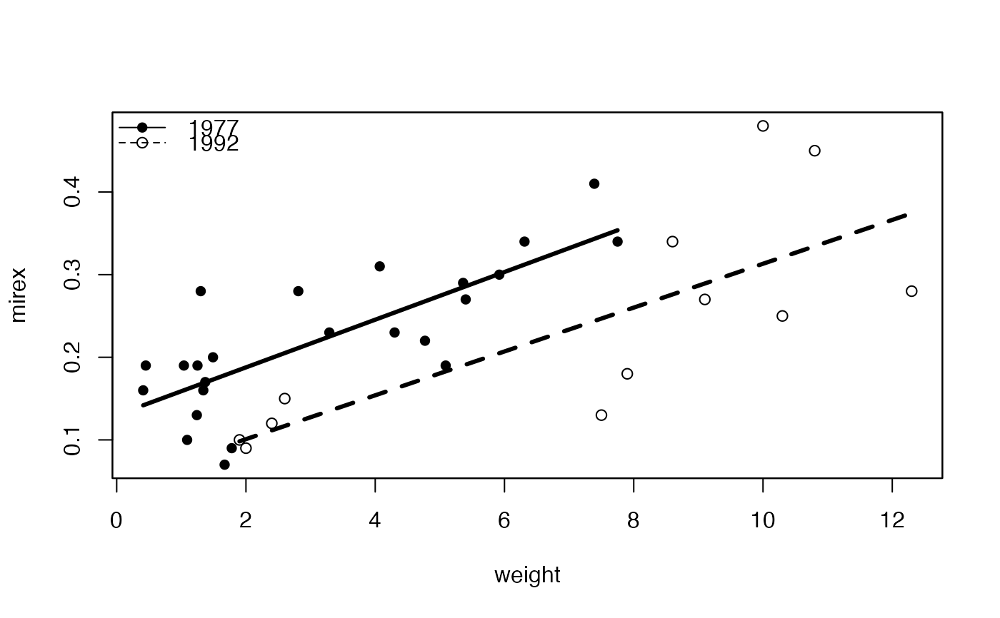
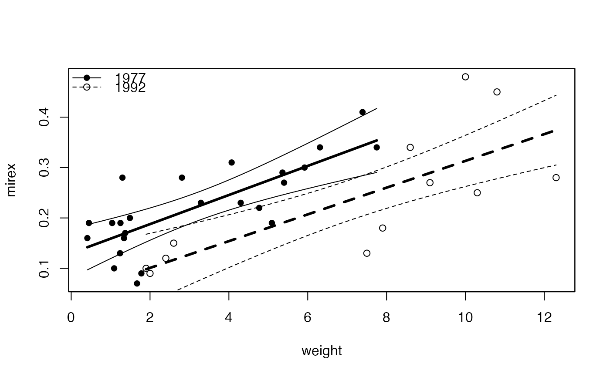
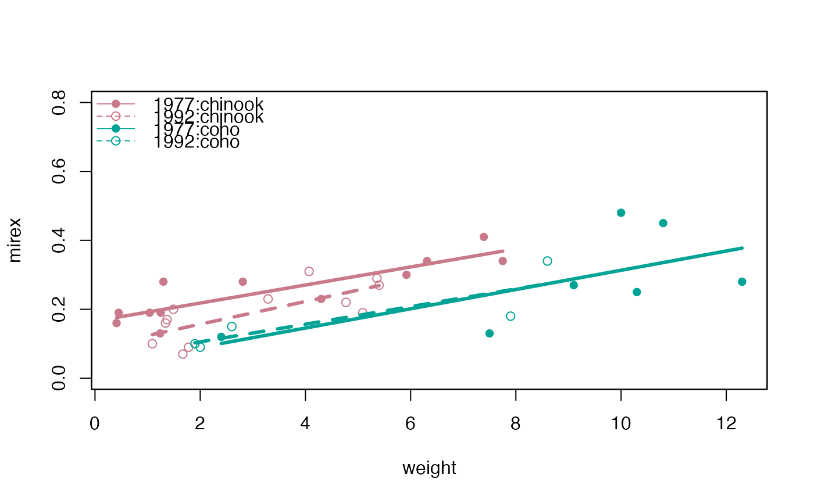
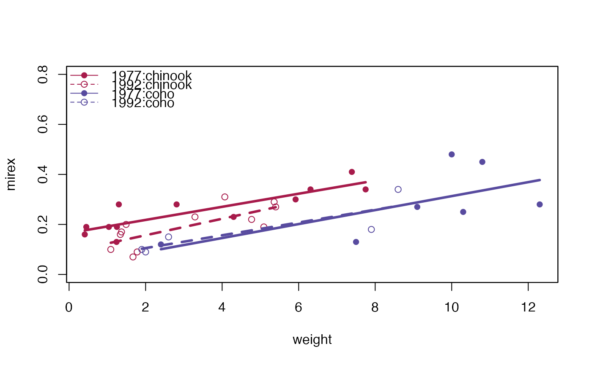
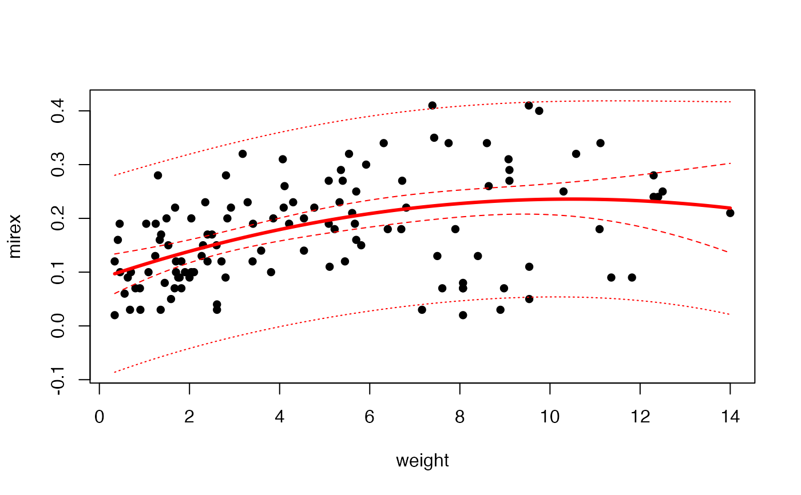

DEPRECATED -- Fitted model plot for an lm, glm, or nls object.
Source:R/deprecated_fitPlot.R
fitPlot-deprecated.RdA generic function for constructing a fitted model plot for an lm, glm, or nls object. Supported objects are linear models from simple linear regression (SLR), indicator variable regression (IVR), one-way ANOVA, or two-way ANOVA models; general linear models that are logistic regressions with a binary response; and non-linear regression with a single numerical response variable, at least one continuous explanatory variable and up to two group-factor explanatory variables.
fitPlot(object, ...) # S3 method for lm fitPlot(object, ...) # S3 method for SLR fitPlot( object, plot.pts = TRUE, pch = 16, col.pt = "black", col.mdl = "red", lwd = 3, lty = 1, interval = c("none", "confidence", "prediction", "both"), conf.level = 0.95, lty.ci = 2, lty.pi = 3, xlab = object$Enames[1], ylab = object$Rname, main = "", ylim = NULL, ... ) # S3 method for IVR fitPlot(object, ...) # S3 method for POLY fitPlot(object, ...) # S3 method for ONEWAY fitPlot( object, xlab = object$Enames[1], ylab = object$Rname, main = "", type = "b", pch = 16, lty = 1, col = "black", interval = TRUE, conf.level = 0.95, ci.fun = iCIfp(conf.level), col.ci = col, lty.ci = 1, ... ) # S3 method for TWOWAY fitPlot( object, which, change.order = FALSE, xlab = object$Enames[ord[1]], ylab = object$Rname, main = "", type = "b", pch = c(16, 21, 15, 22, 17, 24, c(3:14)), lty = c(1:6, 1:6, 1:6), col = "Dark 2", interval = TRUE, conf.level = 0.95, ci.fun = iCIfp(conf.level), lty.ci = 1, legend = "topright", cex.leg = 1, box.lty.leg = 0, ... ) # S3 method for nls fitPlot( object, d, pch = c(19, 1), col.pt = c("black", "red"), col.mdl = col.pt, lwd = 2, lty = 1, plot.pts = TRUE, jittered = FALSE, ylim = NULL, legend = FALSE, legend.lbls = c("Group 1", "Group 2"), ylab = names(mdl$model)[1], xlab = names(mdl$model)[xpos], main = "", ... ) # S3 method for glm fitPlot(object, ...) # S3 method for logreg fitPlot( object, xlab = names(object$model)[2], ylab = names(object$model)[1], main = "", plot.pts = TRUE, col.pt = "black", transparency = NULL, plot.p = TRUE, breaks = 25, p.col = "blue", p.pch = 3, p.cex = 1, yaxis1.ticks = seq(0, 1, 0.1), yaxis1.lbls = c(0, 0.5, 1), yaxis2.show = TRUE, col.mdl = "red", lwd = 2, lty = 1, mdl.vals = 50, xlim = range(x), ... )
Arguments
| object | An |
|---|---|
| ... | Other arguments to be passed to the plot functions. |
| plot.pts | A logical that indicates ( |
| pch | A numeric or vector of numerics that indicates what plotting character codes should be used. In SLR this is the single value to be used for all points. In IVR a vector is used to identify the characters for the levels of the second factor. |
| col.pt | A string used to indicate the color of the plotted points. Used only for SLR and logistic regression objects. |
| col.mdl | A string used to indicate the color of the fitted line. Used only for SLR and logistic regression objects. |
| lwd | A numeric used to indicate the line width of the fitted line. |
| lty | A numeric or vector of numerics used to indicate the type of line used for the fitted line. In SLR this is a single value to be used for the fitted line. In IVR a vector is used to identify the line types for the levels of the second factor. See |
| interval | In SLR or IVR, a string that indicates whether to plot confidence ( |
| conf.level | A decimal numeric that indicates the level of confidence to use for confidence and prediction intervals. |
| lty.ci | a numeric used to indicate the type of line used for the confidence band lines for SLR objects or interval lines for one-way and two-way ANOVA. For IVR, the confidence band types are controlled by |
| lty.pi | a numeric used to indicate the type of line used for the prediction band lines for SLR objects. For IVR, the prediction band types are controlled by |
| xlab | a string for labeling the x-axis. |
| ylab | a string for labeling the y-axis. |
| main | a string for the main label to the plot. Defaults to the model call. |
| ylim | A vector of length two to control the y-axis in the nonlinear regression plot. |
| type | The type of graphic to construct in a one-way and two-way ANOVA. If |
| col | A vector of color names or the name of a palette (from |
| ci.fun | A function used to put error bars on the one-way or two-way ANOVA graphs. The default is to use the internal |
| col.ci | A vector of color names or numbers or the name of a palette (see details) that indicates what colors to use for the confidence interval bars in one-way and two-way ANOVAs. |
| which | A character string listing the factor in the two-way ANOVA for which the means should be calculated and plotted. This argument is used to indicate for which factor a main effects plot should be constructed. If left missing then an interaction plot is constructed. |
| change.order | A logical that is used to change the order of the factors in the |
| legend | Controls use and placement of the legend. See details. |
| cex.leg | A single numeric values used to represent the character expansion value for the legend. Ignored if |
| box.lty.leg | A single numeric values used to indicate the type of line to use for the box around the legend. The default is to not plot a box. |
| d | A data frame that contains the variables used in construction of the |
| jittered | A logical that indicates whether the points should be jittered horizontally. |
| legend.lbls | A vector of strings that will be the labels for the legend in an nls fitPlot graphic. |
| transparency | A numeric that indicates how many points would be plotted on top of each other in a logistic regression before the ‘point’ would have the full |
| plot.p | A logical that indicates if the proportion for categorized values of X are plotted ( |
| breaks | A number that indicates how many intervals over which to compute proportions or a numeric vector that contains the endpoints of the intervals over which to compute proportions if |
| p.col | A color to plot the proportions. |
| p.pch | A plotting character for plotting the proportions. |
| p.cex | A character expansion factor for plotting the proportions. |
| yaxis1.ticks | A numeric vector that indicates where tick marks should be placed on the left y-axis (for the proportion of ‘successes’) for the logistic regression plot. |
| yaxis1.lbls | A numeric vector that indicates labels for the tick marks on the left y-axis (for the proportion of ‘successes’) for the logistic regression plot. |
| yaxis2.show | A logical that indicates whether the right y-axis should be created ( |
| mdl.vals | A numeric that represents the number of values to use for plotting the logistic regression. A larger number means a smoother line. |
| xlim | A vector of length two to control the x-axis in the logistic regression plot. If this is changed from the default then the domain over which the logistic regression model is plotted will change. |
Value
None. However, a fitted-line plot is produced.
Details
This function does not work with a multiple linear regression, indicator variable regressions with more than two factors, ANOVAs other than one-way and two-way, or models with a categorical response variable. In addition, if the linear model contains a factor then the model must be fit with the quantitative explanatory variable first, followed by the factor(s). This function only works for non-linear models with two or fewer groups.
This function is basically a wrapper to a variety of other functions. For one-way or two-way ANOVAs the primary functions called are interaction.plot and lineplot.CI. For simple linear regression the function performs similarly to abline except that the line is constrained to the domain. For indicator variable regression the function behaves as if several abline functions had been called.
A legend can be added to the plot in three different ways. First, if legend = TRUE then the R console is suspended until the user places the legend on the graphic by clicking on the graphic at the point where the upper-left corner of the legend should appear. Second, the legend= argument can be set to one of "bottomright", "bottom", "bottomleft", "left", "topleft", "top", "topright", "right" and "center". In this case, the legend will be placed inside the plot frame at the given location. Finally, the legend= argument can be set to a vector of length two which identifies the plot coordinates for the upper-left corner of where the legend should be placed. A legend will not be drawn if legend = FALSE or legend = NULL. A legend also will not be drawn if there are not multiple groups in the model.
Note
This function is meant to allow newbie students the ability to visualize the most common linear models found in an introductory or intermediate level undergraduate statistics course without getting “bogged-down” in the gritty details of a wide variety of functions. This generic function and it's S3 functions allow the student to visualize the means plot of a one-way anova, the main effects and interaction plots of a two-way ANOVA, the fit of a simple linear regression, the fits of many lines in an indicator variable regression, and the fit of a non-linear model with a simple and mostly common set of arguments -- generally, all that is required is a fitted linear model of the type mentioned here as the first argument. This function thus allows newbie students to interact with and visualize moderately complex linear models in a fairly easy and efficient manner. THIS IS NOT A RESEARCH GRADE FUNCTION and the user should learn how to use the functions that this function is based on, build plots from “scratch”, or use more sophisticated plotting packages (e.g., ggplot2 or lattice).
See also
See abline, regLine in car, error.bars in psych, interaction.plot, and lineplot.CI in sciplot for similar functionality. See residPlot for related functionality.
Author
Derek H. Ogle, derek@derekogle.com
Examples
# create year as a factor variable Mirex$fyear <- factor(Mirex$year) # reduce number of years for visual simplicity for iVRs Mirex2 <- filterD(Mirex,fyear %in% c(1977,1992)) ## One-way ANOVA aov1 <- lm(mirex~fyear,data=Mirex) fitPlot(aov1)#> Warning: 'fitPlot' is deprecated and will soon be removed from 'FSA'; see fishR post from 25-May-2021 for alternative methods.## Two-way ANOVA aov2 <- lm(mirex~fyear*species,data=Mirex) # interaction plots and a color change fitPlot(aov2,legend="bottomleft")#> Warning: 'fitPlot' is deprecated and will soon be removed from 'FSA'; see fishR post from 25-May-2021 for alternative methods.fitPlot(aov2,change.order=TRUE)#> Warning: 'fitPlot' is deprecated and will soon be removed from 'FSA'; see fishR post from 25-May-2021 for alternative methods.# main effects plots fitPlot(aov2,which="species")#> Warning: 'fitPlot' is deprecated and will soon be removed from 'FSA'; see fishR post from 25-May-2021 for alternative methods.fitPlot(aov2,which="fyear")#> Warning: 'fitPlot' is deprecated and will soon be removed from 'FSA'; see fishR post from 25-May-2021 for alternative methods.## Simple linear regression (show color change and confidence/prediction bands) slr1 <- lm(mirex~weight,data=Mirex) fitPlot(slr1)#> Warning: 'fitPlot' is deprecated and will soon be removed from 'FSA'; see fishR post from 25-May-2021 for alternative methods.fitPlot(slr1,interval="both")#> Warning: 'fitPlot' is deprecated and will soon be removed from 'FSA'; see fishR post from 25-May-2021 for alternative methods.## Indicator variable regression with one factor (also showing confidence bands) ivr1 <- lm(mirex~weight*fyear,data=Mirex2) fitPlot(ivr1,legend="topleft")#> Warning: 'fitPlot' is deprecated and will soon be removed from 'FSA'; see fishR post from 25-May-2021 for alternative methods.fitPlot(ivr1,legend="topleft",interval="confidence")#> Warning: 'fitPlot' is deprecated and will soon be removed from 'FSA'; see fishR post from 25-May-2021 for alternative methods.fitPlot(ivr1,legend="topleft",interval="confidence",col="Dark 2")#> Warning: 'fitPlot' is deprecated and will soon be removed from 'FSA'; see fishR post from 25-May-2021 for alternative methods.## Indicator variable regression with one factor (assuming parallel lines) ivr2 <- lm(mirex~weight+species,data=Mirex2) fitPlot(ivr2,legend="topleft")#> Warning: 'fitPlot' is deprecated and will soon be removed from 'FSA'; see fishR post from 25-May-2021 for alternative methods.## Indicator variable regression with two factors ivr3 <- lm(mirex~weight*fyear*species,data=Mirex2) fitPlot(ivr3,ylim=c(0,0.8),legend="topleft")#> Warning: 'fitPlot' is deprecated and will soon be removed from 'FSA'; see fishR post from 25-May-2021 for alternative methods.#> Warning: 'fitPlot' is deprecated and will soon be removed from 'FSA'; see fishR post from 25-May-2021 for alternative methods.## Polynomial regression poly1 <- lm(mirex~weight+I(weight^2),data=Mirex) fitPlot(poly1,interval="both")#> Warning: 'fitPlot' is deprecated and will soon be removed from 'FSA'; see fishR post from 25-May-2021 for alternative methods.## Non-linear model example lr.sv <- list(B1=6,B2=7.2,B3=-1.5) nl1 <- nls(cells~B1/(1+exp(B2+B3*days)),start=lr.sv,data=Ecoli) fitPlot(nl1,Ecoli,cex.main=0.7,lwd=2)#> Error in nls(formula = cells ~ B1/(1 + exp(B2 + B3 * days)), data = Ecoli, start = lr.sv, algorithm = "default", control = list(maxiter = 50, tol = 1e-05, minFactor = 0.0009765625, printEval = FALSE, warnOnly = FALSE, scaleOffset = 0, nDcentral = FALSE), trace = FALSE, model = TRUE): object 'lr.sv' not found## Logistic regression example ## NASA space shuttle o-ring failures -- from graphics package d <- data.frame(fail=factor(c(2,2,2,2,1,1,1,1,1,1,2,1,2,1,1,1,1,2,1,1,1,1,1), levels = 1:2, labels = c("no","yes")), temperature <- c(53,57,58,63,66,67,67,67,68,69,70,70,70,70, 72,73,75,75,76,76,78,79,81)) glm1 <- glm(fail~temperature,data=d,family="binomial") fitPlot(glm1)#> Warning: 'fitPlot' is deprecated and will soon be removed from 'FSA'; see fishR post from 25-May-2021 for alternative methods.#> Warning: 'fitPlot' is deprecated and will soon be removed from 'FSA'; see fishR post from 25-May-2021 for alternative methods.